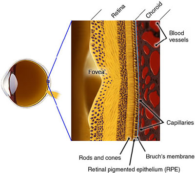
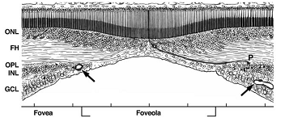

+ Hoàng điểm: định vị ở trung tâm võng mạc, phía thái dương thị thần kinh. Nó là một bộ phận nhỏ và nhạy cảm cao của võng mạc chịu trách nhiệm hoàn toàn thị giác trung tâm. Vùng trung tâm hoàng điểm gọi là Fovea. Hoàng điểm đường kính khoảng chừng 1,5mm, 15 độ về phía thái dương, nằm hơi xuống dưới so với thị thần kinh.


Hình: Phân vùng trung tâm hoàng điểm và lõm hoàng điểm
+ Ectopia of the macula: hoàng điểm lệch vị trí. Một bất thường của hoàng điểm có thể do mắc phải hoặc bẩm sinh. Đôi khi hình thành do sẹo võng mạc, phẫu thuật bong võng mạc, có viêm nhiễm trước đó. Gây giảm thị lực, biến dạng hình ảnh hoặc lác.
+ Macula lutea: một vùng hình oval có đường kính 3-5mm, với lõm ở trung tâm hoàng điểm, hơi nằm phía dưới mức đĩa thị và nằm ở phía thái dương, trung tâm của nó cách bờ đĩa thị 3,5mm. Thành bên của phần lõm đổ dốc dần dần hướng về trung tâm ở đó định vị trung tâm hoàng điểm nơi được coi là thị lực tốt nhất. Bao quanh fovea, tế bào hạch tập trung nhiều hơn và hình thành lớp sợi Henle và mất dần các tế bào que vì thế ở foveola chỉ có các tế bào nón được tìm thấy. Vùng macula lutea được thấm bởi sắc tố vàng (sắc tố hoàng điểm) ở lớp trong và nguyên nhân mà chúng ta thường gọi là điểm vàng (yellow spot).

+ Sparing of the macula: Vùng hoàng điểm không bị tổn thương. Việc mất chức năng hoàng điểm mặc dù có mất thị trường vùng kế cận, ví dụ như bán manh đồng danh do bởi tổn thương vỏ não. Lý do bởi sự phân phối rộng những sợi thần kinh tại vùng hoàng điểm.